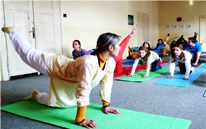
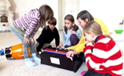

Co je Gurukul (guru=učitel, kul=rodina)
Gurukul je staroindický typ školy, kdy žáci žili u učitele, vzdělávali se a pomáhali v domácnosti. Žáci žili jednoduchým způsobem života a všichni si byli rovni, nepřihlíželo se k sociálním rozdílům. Plně se soustředili na studium a domů se vraceli až v 25 letech.
Gurukuly byly udržovány z darů. Učitel nedostával zaplaceno, až když žák dostudoval, dostal učitel dakšinu (odměnu), která mohla být finanční, v naturáliích nebo také mohlo jít o splnění určitého úkolu.
V gurukulech se kladl důraz nejen na intelektuální rozvoj a tělesné zdraví, ale také na duchovní rozvoj a harmonický vývoj celé osobnosti. V některých gurukulech se vzdělávaly i tisíce studentů.
Gurukul máme v Maháprabhudíp ášramu ve Střílkách jeden víkend v měsíci. Děti začínají den áratí (modlitbou), zpěvem manter a jógovým cvičením. Po snídani a přestávce na hry se mohou účastnit volitelných dílen:
- 1) zpěv bhadžanů (duchovních písní)
- 2) vaření
- 3) hindština
Po dílnách následují hry a tvořivá činnost. Odpoledne se děti seznamují s eposem Rámájána, hrají hry v lese nebo v parku. Zájemci o bhadžany mají ještě chvíli na zpěv a zájemci o zpěv Bhagavadgíty se učí zpívat 12. kapitolu. Během dne zařazujeme i poznávání přírody, karmajógu, hry a osobní volno. Den ukončujeme večerním satsangem. V neděli máme stejný program jako v sobotu dopoledne a končíme závěrečným kruhem – shrnutím víkendu.
Ve školním roce 2014/15 budeme pokračovat v loňských tématech a přidáme Jamu a nijamu (etické příkazy a pravidla), každé setkání probereme jedno z nich.
 

Hindština
Bhagavadgíta
Bhadžany